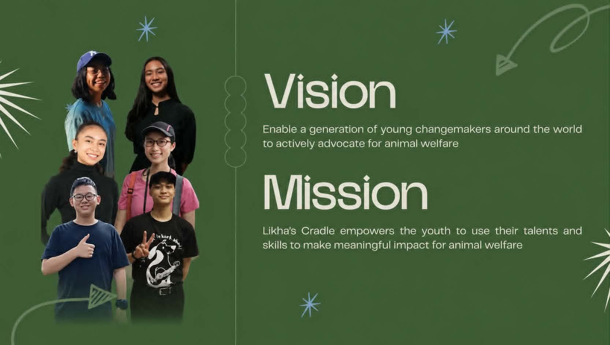
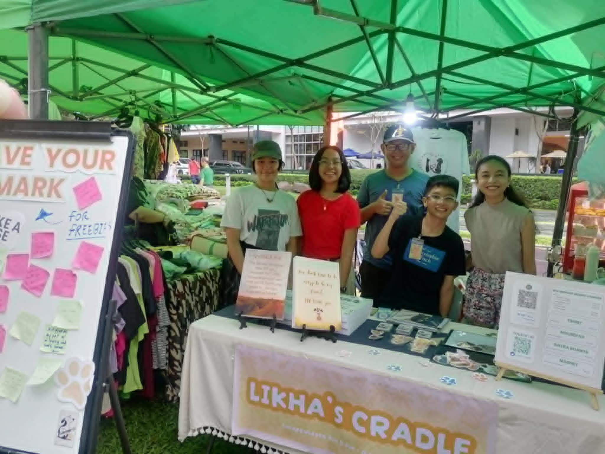
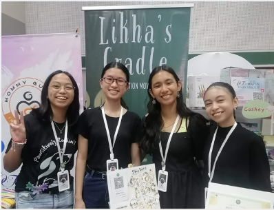
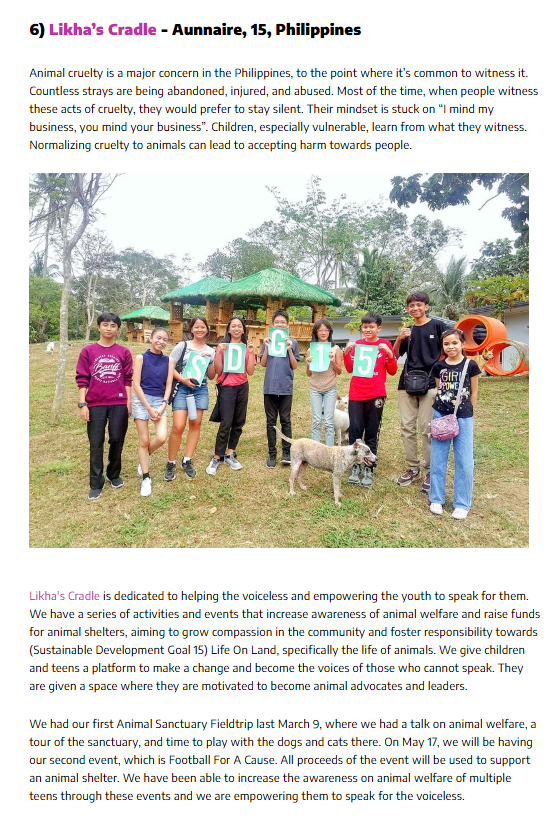

About Us
Likha Officers



Likha's Cradle is a Philippines-based organization where young changemakers turn compassion for animals into real, lasting impact. Our mission is this: Empower the youth around the world to advocate for the Sustainable Development Goals. And our vision is to equip the youth with knowledge on the Sustainable Development Goals, empower them to advocate and take action, and give them a platform to do so.
Likha Officers

An immersive learning experience where students met rescued animals firsthand, deepened their understanding of responsible pet ownership, and discovered how spay and neuter programs create lasting change for communities and animals alike.

A community football fundraiser that transformed every goal into hope, uniting sports and compassion to raise funds for rescued animals under the care of Clowder & Pack Foster Pets (Balay Puspin).

A coding workshop where technology became a force for good, empowering young learners to develop digital skills while raising funds to support rescued animals through Strays Worth Saving.


A fundraising concert that brought together music, advocacy, and community to amplify the voices of animals in need and support the lifesaving work of Biyaya Animal Care.


A debate and advocacy workshop that empowered students to sharpen their public speaking, critical thinking, and leadership skills while exploring how persuasive communication can drive meaningful action for SDG 15 and beyond.

Through our interactive advocacy booth, visitors made a "Pawmise" –their personal commitment to supporting animal welfare–while exploring our cause-driven merchandise. Together, we inspired meaningful action and showed how small promises can create lasting change for animals.

Featured as an official sponsor, Likha's Cradle expanded its advocacy through live event exposure, published media features, and meaningful collaborations that introduced more people to our mission.

At our booth during PRINTCON, our officers showcased and sold their own handmade creations while sharing Likha's Cradle's mission with professionals and industry leaders. The experience strengthened their entrepreneurial, communication, and leadership skills, proving that young changemakers can confidently advocate for a cause in professional spaces.

Likha's Cradle participated in the Global Youth Summit 2025, connecting with fellow young leaders, gaining new perspectives on global challenges, and bringing home valuable insights to strengthen our mission of empowering youth to create meaningful impact.

One of our presenters
A series of interactive sessions that equipped nearly a hundred participants with practical knowledge on the Sustainable Development Goals, inspiring youth to become informed advocates and active changemakers in their communities.

A global youth initiative that united changemakers across multiple continents to collaborate, innovate, and develop solutions for animal welfare–proving that compassion knows no borders and that meaningful impact begins with empowered young leaders.

The HundrED Youth Ambassador Programme brings together young changemakers from around the world to create and strengthen social impact projects aligned with the Sustainable Development Goals (SDGs). In just three months, more than 300 youth from over 100 countries have joined the programme, forming a vibrant global community dedicated to learning, collaborating, and making a positive impact.

This will be our very first CARE Program workshop
In the future we hope to have the workshop onsite at the school, so we can have even more fruitful disscusions
What is it?
The CARE Program is a values-based youth workshop that empowers students to become compassionate and responsible advocates for animal welfare. Aligned with United Nations Sustainable Development Goal (SDG) 15: Life on Land, the program inspires young people to care for animals and the environment through meaningful action. Each 60–90 minute interactive session combines engaging discussions, hands-on activities, and practical learning experiences. Rooted in the values of compassion, stewardship, and responsibility, CARE equips youth with the knowledge and confidence to create positive change in their schools and communities. Many young people genuinely care about animals but are unsure how they can make a difference. While animal welfare is an important issue, schools often lack structured educational programs that teach students how to become responsible advocates. As a result, many awareness campaigns end with information instead of action. CARE bridges this gap by providing students with the guidance, skills, and opportunities they need to transform compassion into meaningful action. Animal welfare is closely connected to community values, environmental stewardship, and social responsibility. By educating and empowering young people, we help develop future leaders who understand that caring for animals also means caring for the world around them. The CARE Program goes beyond raising awareness—it encourages students to take responsibility, inspire others, and become active participants in building kinder, more compassionate communities. Because awareness is only the beginning. Action creates lasting change.
The Articles
Our articles are written by Ysabel Agcaoili, one of our officers
Youtube